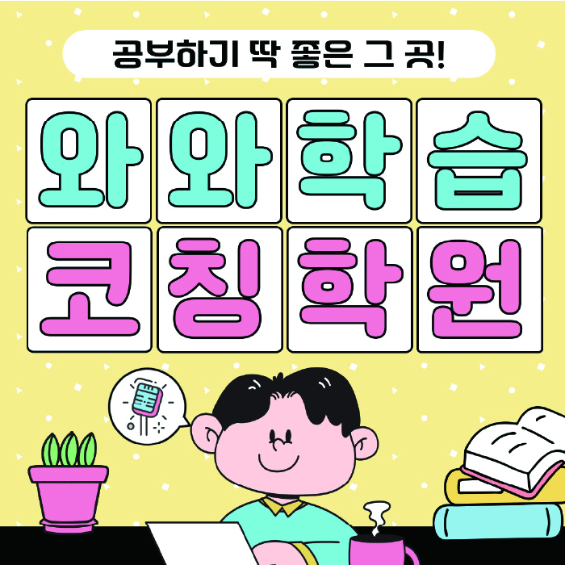

High school Korean · English · Math
청라 고등학생 국영수학원
인천 서구 청라 고등학생 국영수학원 선택 전 국어·영어·수학 진단, 고등 내신 자료, 과목별 오답 관리와 센터 상담 확인 항목을 정리했습니다.
01 Quick answer
청라에서 먼저 확인할 내용
청라에서 고등학생 국영수학원을 찾는다면 와와학습코칭센터 청라점의 과목별 가능 학년을 먼저 확인하세요. 제공된 고등학교 참고 자료와 학생의 실제 교재를 대조하고, 고1 첫 학기 적응을 서두르지만 오답 원인을 한 줄로만 적는 편이고, 부모님에게 진행 상황을 짧게만 말하는 경향이 있어 국어 지문 근거 찾기를 훈련해야 하는 고등학생에게 맞게 과목별로 무엇을 먼저 보완할지 정하는 순서가 필요합니다.
대표 학생 상황
고1 첫 학기 적응을 서두르지만 오답 원인을 한 줄로만 적는 편이고, 부모님에게 진행 상황을 짧게만 말하는 경향이 있어 국어 지문 근거 찾기를 훈련해야 하는 고등학생


 010-6839-8283
010-6839-8283원고 핵심 답변
청라 고등학생 국영수학원을 비교할 때 가장 빠르게 봐야 할 부분은 시간표보다 진단 방식입니다. 이 페이지는 고1 첫 학기 적응을 서두르지만 오답 원인을 한 줄로만 적는 편이고, 부모님에게 진행 상황을 짧게만 말하는 경향이 있어 국어 지문 근거 찾기를 훈련해야 하는 고등학생을 대표 사례로 삼아, 청라에서 국어·영어·수학을 어떻게 나누어 점검하면 좋은지 답변합니다. 또한 제공된 학교 정보와 주소, 그리고 학교 일정 점검처럼 상담에서 확인할 자료를 함께 살펴 상담 전에 확인할 질문을 정리합니다.
청라 고등학생 국영수학원 상담 전 첫 점검 포인트
고등학생 자녀를 둔 가정에서 반복되는 질문은 “청라 고등학생 국영수학원에서 우리 아이가 세 과목을 모두 따라갈 수 있을까”라는 점입니다. 인천 서구 청라 기준으로는 국어, 영어, 수학을 한꺼번에 늘리는 계획보다, 고1 첫 학기 적응을 서두르지만 오답 원인을 한 줄로만 적는 편이고, 부모님에게 진행 상황을 짧게만 말하는 경향이 있어 국어 지문 근거 찾기를 훈련해야 하는 고등학생인지 먼저 확인하는 과정이 더 중요합니다. 청라에서 고등학생 국영수학원을 고를 때 상담표에 현재 단원, 틀린 유형, 과제 지속 시간이 같이 적히면 수업 방향을 더 현실적으로 세울 수 있습니다. 청라 고등학생 국영수학원의 좋은 출발점은 학생에게 많은 약속을 주는 것이 아니라 오늘부터 바꿀 한두 가지 학습 행동을 정하는 데 있습니다.
청라 학교 일정과 현재 교재를 함께 확인하기
청라 페이지의 고등학교 참고 정보에는 청라고·해원고이 포함됩니다. 학교명만으로 수업 가능 여부를 판단하지 않고 센터의 현재 개설 범위를 함께 확인해야 합니다.
청라 고등학생은 시험 범위표·학교 프린트·수행평가 일정 자료를 준비해 국어 읽기·문법, 영어 어휘·문장 적용, 수학 단원·풀이 과정을 구분하는 것이 좋습니다. 확인한 내용을 다음 수업과 복습 계획에 어떻게 반영하는지 살펴보세요.
청라 국어·영어·수학 학습 계획 학생별 출발점 설정
청라 고등학생 세 과목 학습 상담에서 설정한 대표 학생 유형은 고1 첫 학기 적응을 서두르지만 오답 원인을 한 줄로만 적는 편이고, 부모님에게 진행 상황을 짧게만 말하는 경향이 있어 국어 지문 근거 찾기를 훈련해야 하는 고등학생입니다. 인천 서구 청라 학부모님이 체감하는 어려움 중 하나는 이 유형의 학생에게 같은 숙제를 반복해도 결과가 일정하지 않다는 점입니다. 청라에서 학교 일정 점검도 함께 확인하는 가정이라면 학생의 하루 흐름과 과목별 피로도를 먼저 점검해야 합니다. 청라 고등학생 학습 점검에서는 학생이 “모르겠다”라고 말하는 지점을 다시 쪼개어 개념 부족인지, 문제 접근 순서의 문제인지, 복습 부족인지 나누는 것이 좋습니다. 청라 학생에게 맞는 처방은 선행 속도를 높이는 계획이 아니라 현재 단원에서 반복되는 실수를 줄이는 계획일 수 있습니다.
인천 서구 청라 고등학생 시험 대비 루틴
이 지역의 고등학생 학습 과정의 내신 대비는 시험 기간에만 갑자기 시작되는 과정이 아닙니다. 청라에서 고1 첫 학기 적응을 서두르지만 오답 원인을 한 줄로만 적는 편이고, 부모님에게 진행 상황을 짧게만 말하는 경향이 있어 국어 지문 근거 찾기를 훈련해야 하는 고등학생에게는 내신 대비는 새 문제를 많이 푸는 것보다 학교 수업 내용과 오답 기록을 다시 연결하는 과정이 중요합니다. 인천 서구 청라 고등학생이 국어·영어·수학을 함께 관리하려면 기말 기간에는 과목별로 남은 범위를 시각화하고, 국어·영어·수학의 우선순위를 하루 단위로 조정해야 합니다. 청라 고등학생 학습 점검 시험 후에는 고등학생 내신은 하루 집중보다 누적 관리가 더 큰 영향을 주므로, 평소 과제와 시험 대비를 분리하지 않는 편이 좋습니다.
인천 서구 청라 국영수 통합 관리 방법
청라 고등학생 세 과목 학습 상담이 고등학생 국영수학원이라는 이름으로 검색되더라도 세 과목을 같은 방식으로 가르친다는 뜻은 아닙니다. 청라 고등학생의 영어 수업은 단어 암기량만 늘리기보다 문장 구조와 해석 순서를 함께 확인합니다. 인천 서구 청라에서 수학이 흔들리는 학생은 풀이가 길어질수록 어느 단계에서 흔들리는지 기록해야 보충 수업의 방향이 분명해집니다. 청라 국어·영어·수학 학습 계획 상담에서 국어 계획을 세울 때는 지문을 오래 읽는 훈련보다 먼저 문제의 근거가 어느 문장에 있는지 표시하게 합니다. 그리고 선지 판단 이유를 말로 설명해 보게 하면 감으로 맞힌 문제와 알고 맞힌 문제가 나뉩니다. 청라 학부모님은 국어·영어·수학을 모두 맡긴다는 표현보다 과목별 피드백이 서로 충돌하지 않는지 확인해야 합니다. 인천 서구 세 과목 일정이 겹치는 청라 고등학생에게는 과제량과 복습 시간을 현실적으로 조정하는 과정이 필요합니다.
02 Consultation examples
청라 학부모 상담 상황 예시
아래 내용은 실제 고객 후기나 성적 결과가 아니라, 상담에서 확인할 질문을 이해하기 위한 상황 예시입니다.
청라에서 고1 첫 학기 적응을 서두르지만 오답 원인을 한 줄로만 적는 편이고, 부모님에게 진행 상황을 짧게만 말하는 경향이 있어 국어 지문 근거 찾기를 훈련해야 하는 고등학생 자녀에 대해 학부모가 최근 시험지와 오답 노트를 함께 준비한 상황입니다. 상담에서는 세 과목을 모두 늘리기보다 먼저 바꿀 과목과 복습 시점을 정하고, 설명이 실제 주간 계획으로 이어지는지를 확인합니다.
청라 기준 제공된 고등학교 참고 정보인 청라고·해원고의 목록과 학생의 실제 학교 자료를 대조해 질문하는 상담 예시입니다. 센터의 개설 과목과 가능 학년을 확인한 뒤 학생의 귀가 시간, 과제량과 시험 기간 보강 기준을 같은 메모에 정리합니다.
03 FAQ
청라 고등학생 국영수학원 자주 묻는 질문
학부모님이 상담 전에 자주 확인하는 내용을 질문과 답변으로 정리했습니다.
청라 고등학생 국영수학원 상담 전에 먼저 점검할 학습 문제는 무엇인가요?
고1 첫 학기 적응을 서두르지만 오답 원인을 한 줄로만 적는 편이고, 부모님에게 진행 상황을 짧게만 말하는 경향이 있어 국어 지문 근거 찾기를 훈련해야 하는 고등학생에게는 과제량을 바로 늘리는 방식보다 국어 근거 찾기, 영어 해석 과정, 수학 풀이 단계 중 어디에서 멈추는지 먼저 나누어 보는 점검이 적합할 수 있습니다.
청라 국영수 학습에서 과목별 병목을 어떻게 나누나요?
청라 상담에서는 세 과목을 같은 분량으로 나누기보다 최근 시험과 학교 일정, 반복 오답을 기준으로 우선순위를 정합니다. 과목별 완료 기준이 있어야 계획과 실제 실행의 차이를 확인할 수 있습니다.
청라 학교별 내신 자료는 어떤 방식으로 확인하나요?
학교명은 상담 준비를 위한 참고 정보입니다. 청라고·해원고 등과 관련한 실제 수업 여부는 학생의 시험 범위표·학교 프린트·수행평가 일정 자료, 센터의 현재 개설 범위와 함께 확인해야 합니다.
청라 센터의 주소와 과목 운영은 모두 같은가요?
청라 고등학생 국영수학원 페이지의 제공 센터 사실을 기준으로 답합니다. 청라 상담 페이지의 주소 자료에 기재된 위치는 인천 서구 중봉대로 588 청라센트럴프라자 609입니다. 센터 자료의 과목별 학년 표기는 국어 고1·고2·고3, 영어 고등 과정 미기재, 수학 고등 과정 미기재입니다. 페이지에 연결된 센터별 교습비 자료도 함께 확인할 수 있습니다. 시간표와 보강, 차량·주차 운영은 제공 범위 밖이거나 달라질 수 있어 방문 전에 센터에 확인해야 합니다.
04 Continue
청라 페이지 이동
카테고리 전체 지역 또는 앞뒤 지역 안내로 이동할 수 있습니다.